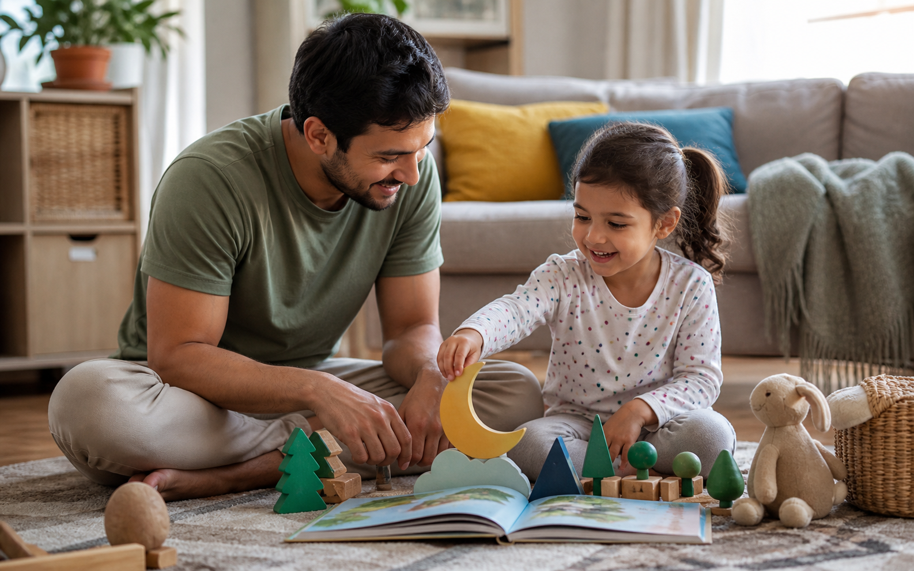

Storytelling prompts are simple questions or tiny invitations that help a child respond to a story in their own way. They do not need to feel like a lesson, a quiz, or a performance. The best prompts feel like a parent saying, "I am listening. Tell me what you noticed."
For babies, toddlers, and preschoolers, that response may be a word, a sound, a gesture, a giggle, or a long imaginative answer. All of it counts. When a parent reads aloud and then leaves space for a child to join in, storytime becomes a shared conversation instead of something the child only receives.
Why prompts help after a story
Young children are still learning how to connect words with feelings. A character who feels worried, proud, shy, brave, or sorry gives them a safe way to talk about emotions without having to start with themselves. This can be especially helpful at bedtime, when the day is winding down and children often need reassurance more than excitement.
A gentle prompt can also support language, memory, empathy, and imagination. The goal is not to test whether your child understood every plot point. The goal is to invite them back into the story for one small, meaningful moment.
Prompt 1: The feelings doorway
Ask, "How do you think the character felt right there?" If your child is very young, offer two choices: "Was the rabbit excited or a little worried?" This gives them language without pressure.
You can follow with, "What helped them feel better?" This turns the prompt toward comfort, problem-solving, and care. It is a soft way to build emotional vocabulary while keeping the story feeling safe.
Prompt 2: The kindness ripple
Invite your child to imagine one more kind thing the main character could do. "Who could they help next?" or "What could they say to make their friend smile?" These questions connect story values to real life without sounding like a lecture.
For preschoolers, you can bring it closer to home: "Is there someone we can be kind to tomorrow?" Keep it simple. A wave, a shared toy, or a thank-you can be enough.
Prompt 3: Change one thing
Ask your child to change one small part of the story: the weather, the animal, the snack, the place, or the character's name. "What if the story happened in our backyard?" is often easier than "Make up a whole new story."
Small changes are powerful because they let children practice creativity while still holding onto a familiar structure. The story becomes theirs, but it does not become overwhelming.
Prompt 4: What would you do?
During a reread, pause before a gentle decision and ask, "What would you do now?" Let your child direct the action. They might solve the problem with sharing, hiding, asking for help, singing a song, or calling a parent. There is no need to correct every answer.
This prompt builds confidence because the child gets to be part of the story world. It also shows you how they think through little problems.

Prompt 5: Tell it with toys
Some children talk more easily when their hands are busy. After the story, choose one toy, block, spoon, blanket, or plush friend and say, "This can be the character. Where should they go next?"
This is especially useful for toddlers who may not answer abstract questions yet. They can point, move a toy, make a sound, or act out the next moment. That is storytelling too.
Prompt 6: The calm-down ending
Before sleep, invite your child to make a peaceful final scene. "Where does the little bird rest?" "Who says goodnight?" "What sound does the moon hear?" Keep your voice slow and warm.
You can add one body cue: a stretch, a cuddle, a hand on the heart, or one slow breath. This helps storytime become part of the bedtime routine rather than a burst of new energy.
How to keep prompts gentle
Choose one or two prompts, not ten. If your child is tired, a single question is enough. If they do not answer, you can answer softly yourself: "I think the bear felt proud because he tried again." The point is connection, not completion.
Baboo Stories is built for parent read-aloud moments like this. The story gives you a starting place, and your voice, questions, and attention make it personal.
Make the next story yours
Pair these prompts with our bedtime ritual ideas and download Baboo Stories for gentle read-aloud stories you can turn into warm family conversations.
Baboo Stories is a calmer bedtime story app for parents who want to read, bond, and help toddlers wind down with gentle read-aloud stories.